Lume de Papel / Identidade de marca
O cuidado
que fica.
Uma papelaria de presentes onde o carinho começa antes da primeira página.
Projeto autoral da Feed. Marca fictícia criada para demonstrar um trabalho completo de branding. Não é um cliente real.

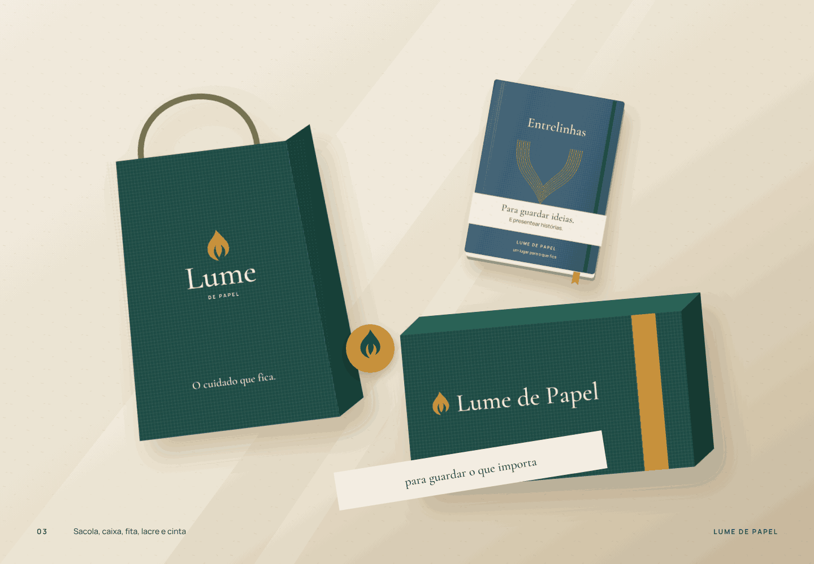
01 / Estratégia
Presentear é dizer:
eu pensei em você.
A Lume de Papel transforma um objeto cotidiano em um gesto de presença. Cadernos que acolhem ideias, bilhetes e histórias, escolhidos com calma e entregues com cuidado.
O ponto de partida é uma papelaria fictícia do interior paulista, com loja de bairro e atendimento por WhatsApp. Seu produto central é o caderno para presente: capa dura azul ou verde, costura à mão e embrulho incluso.
O briefing desta apresentação é uma hipótese criativa. As decisões foram desenvolvidas para uma marca de demonstração que já aparece no Feed Hub.
Para quem
Adultos que procuram um presente pessoal para amigos, professores e colegas. Valorizam o toque, a apresentação e a ajuda para escolher, sem precisar dominar o universo da papelaria.
O problema
Entre papelarias utilitárias e presentes impessoais, falta uma marca que torne visível o valor do acabamento e faça a compra parecer tão cuidadosa quanto o produto.
A resposta
Uma identidade que aproxima o caderno do gesto de presentear. Menos ruído, mais matéria. Informação clara e uma conversa que ajuda a decidir.
Para quem quer dar algo pessoal, a Lume de Papel é a papelaria de afetos que põe cuidado em cada página e em cada escolha.
Por que Lume de Papel
Lume é uma luz pequena, próxima, que ilumina sem ofuscar. Papel é o lugar onde uma intenção ganha forma. Juntos, nomeiam o afeto que começa como ideia e permanece como lembrança.
Personalidade
Atenciosa, serena, tátil e precisa. Tem a delicadeza de quem embrulha bem e a objetividade de quem informa cor, acabamento e prazo.
Valores que viram comportamento
- CuidadoConferir cada detalhe antes de entregar.
- PresençaOuvir o motivo do presente antes de sugerir.
- SimplicidadeFacilitar a escolha com poucas opções bem explicadas.
- PermanênciaProjetar objetos para serem usados e guardados.
- HonestidadePrometer somente o que a equipe pode confirmar.
02 / Universo sensorial
Matéria que acolhe.
Luz que aproxima.

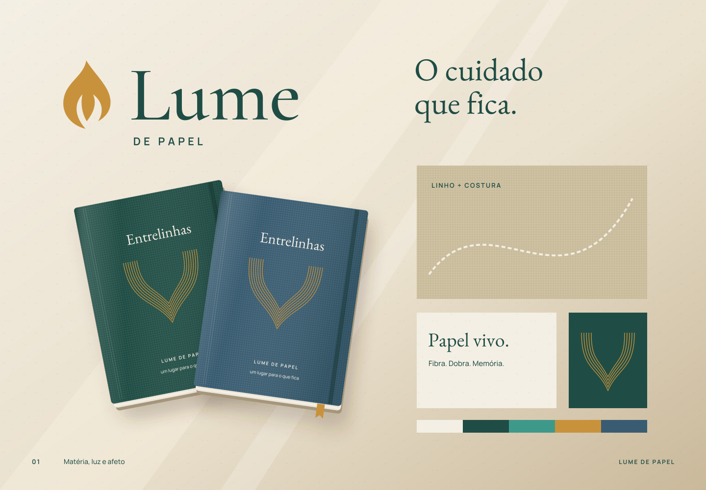
O que se sente
O encontro entre uma mesa de encadernação e uma loja de bairro bem cuidada. Papel natural, linho sem brilho, linha aparente e pequenos acentos de metal fosco. A sombra dá espessura aos objetos.
O que organiza
Uma margem generosa como a de uma página. Tipografia literária com leitura clara. Verde contínuo entre loja e atendimento. Âmbar usado com economia, como o brilho de um detalhe.
Todas as imagens deste case foram construídas em SVG, com texturas procedurais e composição própria, e renderizadas em PNG. Não há fotografia real, imagem de banco ou imagem gerada por modelo de imagem.
03 / Identidade
Uma chama que nasce
do encontro de duas folhas.
O contorno externo guarda a chama do primeiro esboço. O recorte interno revela duas folhas que se abrem em torno de uma dobra.
Não há um quadrado em volta. O símbolo tem forma própria e aparece como assinatura, lacre ou sinal de orientação. O grafismo de páginas faz o trabalho de ambientação.
Um sistema, diferentes espaços.
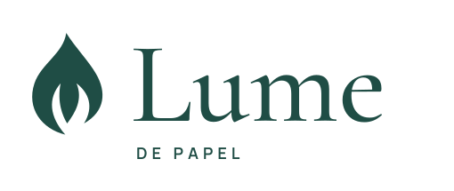
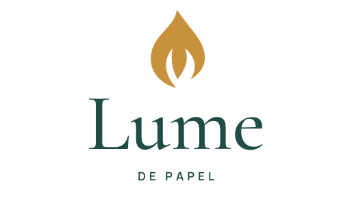
A principal combina símbolo, “Lume” e o descritor “DE PAPEL”. A horizontal cabe em letreiros e cabeçalhos. A vertical resolve etiquetas altas. O símbolo funciona em lacres. O LD preserva a leitura do avatar existente no Hub.

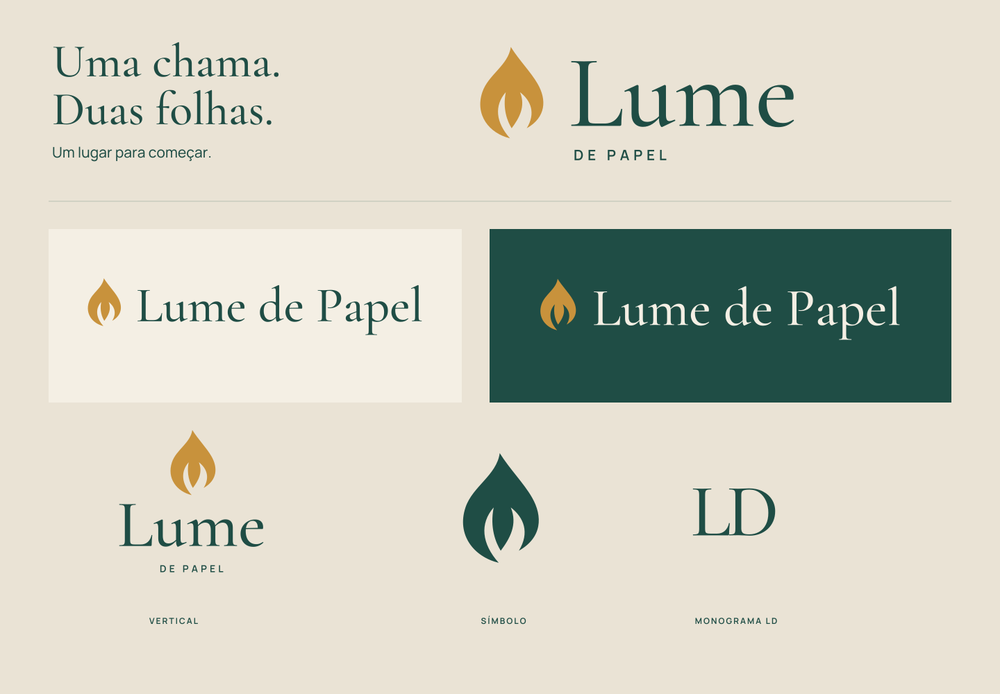
Regras de reprodução
- Área de proteção: no mínimo 1xx corresponde a 10 unidades no módulo de 125 unidades do símbolo. Manter esse espaço livre ao redor do limite visual da assinatura. Para marcas parceiras, adotar 2x.
- Fundos claros e escurosPositivo em Mata com chama Âmbar sobre Papel. Negativo em Papel com chama Âmbar sobre Mata. Uma tinta: toda a marca em Mata ou toda em Papel.
- Avatar de atendimentoLD em Papel sobre Verde Lume. Uso de identificação, sem função de texto corrido. O círculo pertence ao avatar, não ao símbolo.
- Tamanho mínimo digital e impressoPrincipal 160 px ou 32 mm. Horizontal 220 px ou 45 mm. Vertical 144 px ou 30 mm. Símbolo e LD 24 px ou 6 mm. Medidas da largura do arquivo.
- Materiais especiaisBordado e hot stamping pedem teste de amostra e largura mínima maior. Não presumir que o mínimo de tela serve para linha ou clichê.
- Sem interferênciasNão esticar, girar, recolorir, contornar, aplicar sombra ou reorganizar as partes. Não usar sobre fotografia movimentada.

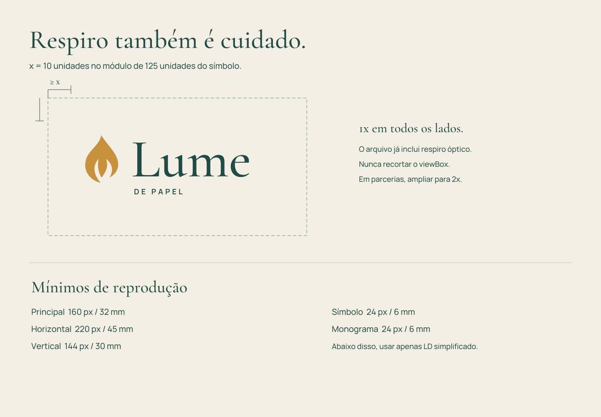

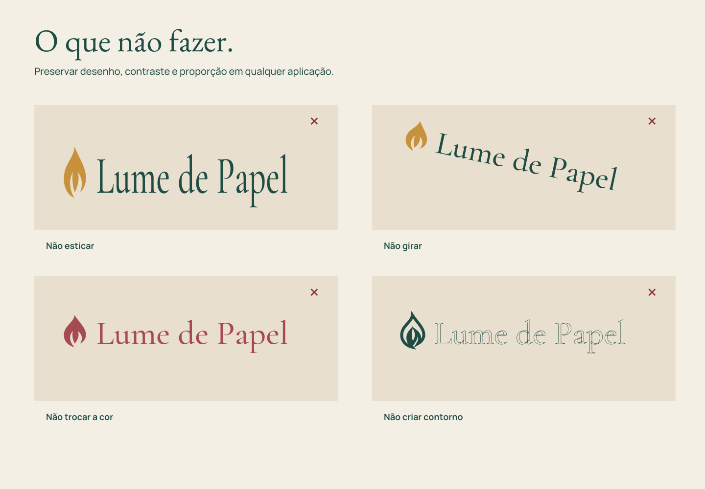
Arquivos de produção do logo


04 / Sistema visual
Verde de perto.
Papel por toda parte.
Papel
#F4EFE4RGB 244 / 239 / 228
CMYK 0 / 2 / 7 / 4
55% de uso
Mata
#1F4D45RGB 31 / 77 / 69
CMYK 60 / 0 / 10 / 70
25% de uso
Verde Lume
#3F998BRGB 63 / 153 / 139
CMYK 59 / 0 / 9 / 40
15% de uso
Âmbar
#C8923CRGB 200 / 146 / 60
CMYK 0 / 27 / 70 / 22
5% de uso
Azul caderno
#395C72RGB 57 / 92 / 114
CMYK 50 / 19 / 0 / 55
Cor exclusiva de produto
Proporções orientam uma composição de marca, sem contar fotos de produto. O azul pertence ao caderno e mantém a continuidade com o Hub. O Verde Lume é superfície e reconhecimento; Mata é a cor principal de texto e ação.
CMYK calculado por conversão matemática, sem perfil de impressão. Para produção, fazer prova em papel real com o perfil ICC da gráfica. Não são referências Pantone.
Contraste não é preferência.
| Texto / fundo | Contraste | Texto normal |
|---|---|---|
| Mata sobre Papel | 8.30:1 | AA |
| Papel sobre Mata | 8.30:1 | AA |
| Mata sobre Âmbar | 3.46:1 | Não usar |
| Papel sobre Azul | 6.21:1 | AA |
| Papel sobre Verde Lume | 2.98:1 | Não usar |
| Mata sobre Verde Lume | 2.78:1 | Não usar |
| Âmbar sobre Papel | 2.40:1 | Não usar |
Cálculo WCAG em sRGB. AA exige pelo menos 4,5:1 para texto normal e 3:1 para texto grande, a partir de 24 px regular ou 18,66 px em negrito. As combinações reprovadas na tabela ficam restritas a grafismos ou à versão aprovada de logo. Botões usam Papel sobre Mata. Âmbar não recebe texto pequeno em Mata.
Duas vozes tipográficas.
Entrelinhas
Aa Bb Cc
Peso 500. Títulos, frases de marca e nome de linha. O contraste entre hastes lembra impressão e literatura, sem imitar escrita manual.
Um cuidado
por escrito.
0123456789
Pesos 450 e 650. Textos, etiquetas, navegação e informação de produto. Letras abertas para a leitura continuar fácil no celular.
Fontes locais incluídas, ambas distribuídas pelo Google Fonts com licença SIL Open Font License. Não usar a serifada em conversas longas ou campos de formulário. Nos logos, as letras estão convertidas em contorno.
Sinais desenhados para a marca.

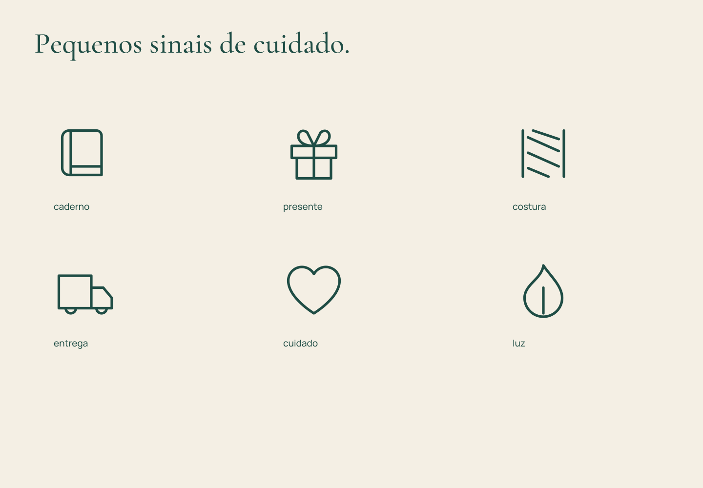

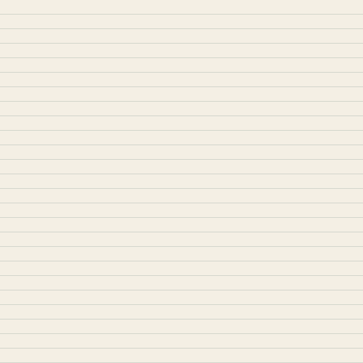

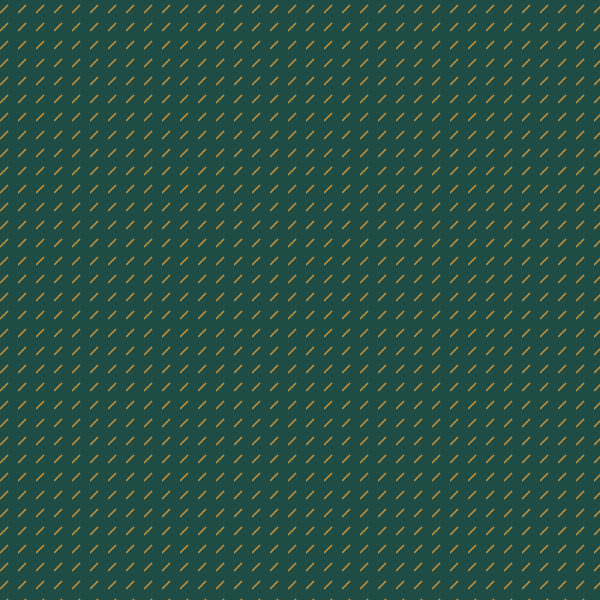

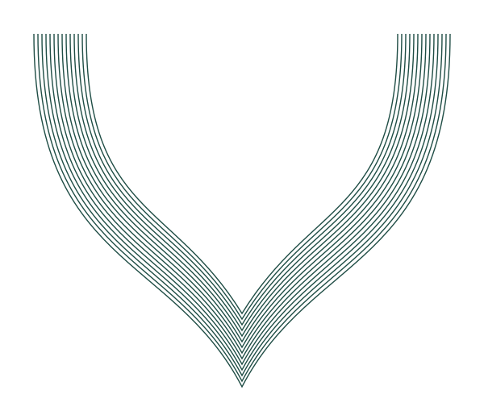
Aplicar apenas um padrão por peça. Pauta em baixa intensidade no papel; costura em bordas e bastidores; Vinco em capas e composições de respiro. Nunca colocar padrão atrás de texto de leitura. O símbolo não funciona como estampa repetida.
Direção de fotografia
Luz, enquadramento e matéria
Luz lateral macia, vindo de cima à esquerda, equivalente a uma janela no fim da tarde. Sombras para baixo e à direita. Cor de luz entre 4.800 e 5.200 K. Papel neutro, verde fiel e metal sem brilho excessivo.
Planos próximos do fio, da lombada e do vinco. Vista superior para conjuntos; câmera a 45 graus para mostrar espessura. Fundo de papel, madeira clara ou linho. Objetos reais em número pequeno.
Gente e gestos
Mãos escrevendo a dedicatória, escolhendo a capa ou dobrando o embrulho. Pele com textura, gesto natural e roupa sem estampas. O foco é o encontro entre mão e matéria.
Evitar luz azulada, brilho plástico, saturação alta, flores decorativas sem função e mesas lotadas. As cenas vetoriais deste case traduzem essa direção, mas não substituem um ensaio real.
Voz próxima, informação precisa.
A Lume fala como quem recebe alguém no balcão: escuta, explica e ajuda a escolher. Usa “você” e “a gente”, frases curtas e detalhes concretos. Afeto sem infantilizar, poesia sem esconder informação.
“Um presente. Muitas páginas pela frente.”
Frase de campanha. Uma ideia por vez, sem prometer transformar a vida de ninguém.
“Capa azul ou verde. Você escolhe, a gente embrulha.”
Escolha e benefício na mesma frase, com palavras que o cliente usa.
“Oi, Lia! É para presente? Você prefere azul ou verde?”
Uma pergunta de cada vez. O Agente Lume se identifica como assistente virtual.
“Vou conferir esse prazo com a equipe e te aviso antes de fechar.”
Não inventar estoque ou garantir entrega sem confirmação. Se houver dúvida, chamar uma pessoa.
Evitar “mimo”, “imperdível”, “a melhor papelaria”, excesso de diminutivos e urgência artificial. No pós-compra: “Seu presente está pronto. Quer conferir a dedicatória antes de retirar?”
05 / Aplicações físicas
Quando a marca
vira matéria.
A identidade se sustenta nos detalhes de uso: uma boa etiqueta, um cartão legível, a cinta que explica e o embrulho que chega inteiro.

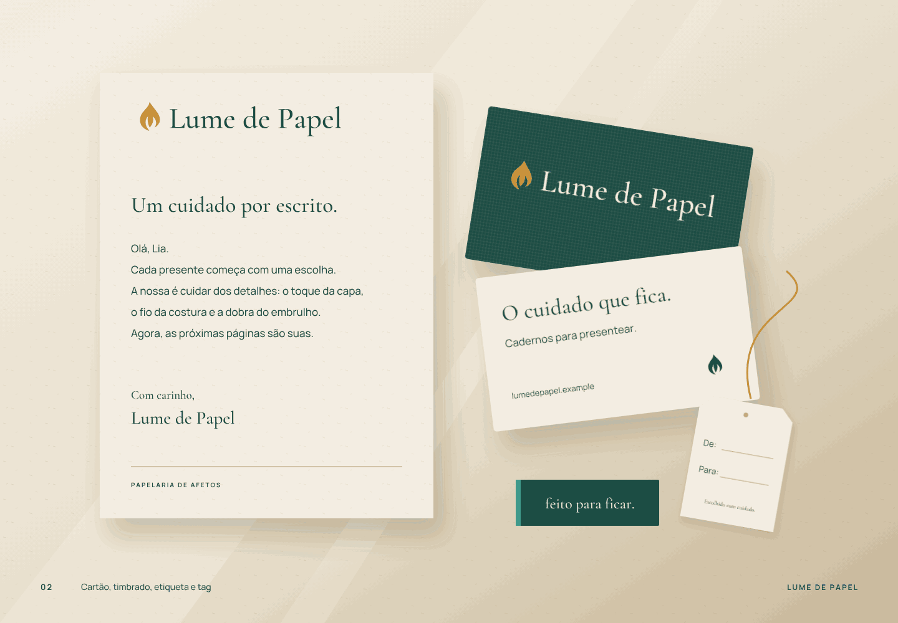
Cartão 90 × 50 mm em papel natural 300 g/m². Timbrado A4 em papel 90 g/m². Etiqueta 55 × 20 mm. Tag 45 × 65 mm, furo de 3 mm. As imagens apresentam composição e direção de acabamento.
Margens generosas, contato sem excesso e linhas livres para escrever. O endereço lumedepapel.example é reservado para exemplos e não representa uma loja ativa.
Sacola 24 × 30 × 10 cm. Caixa 18 × 25 × 4 cm. Fita de 20 mm, lacre de 35 mm e cinta de 50 mm. Papel Mata e marca em Papel; Âmbar em pequenos acabamentos. As medidas são sugestões de desenvolvimento, não facas prontas de gráfica.

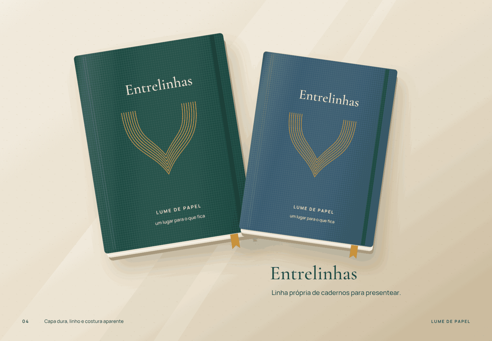
Formato proposto 14 × 21 cm, capa dura e miolo sem pauta em papel natural. O Vinco ocupa uma área única da capa. A lombada fica limpa e o marcador Âmbar ajuda a encontrar a página. Validar papel, abertura e resistência com um encadernador.

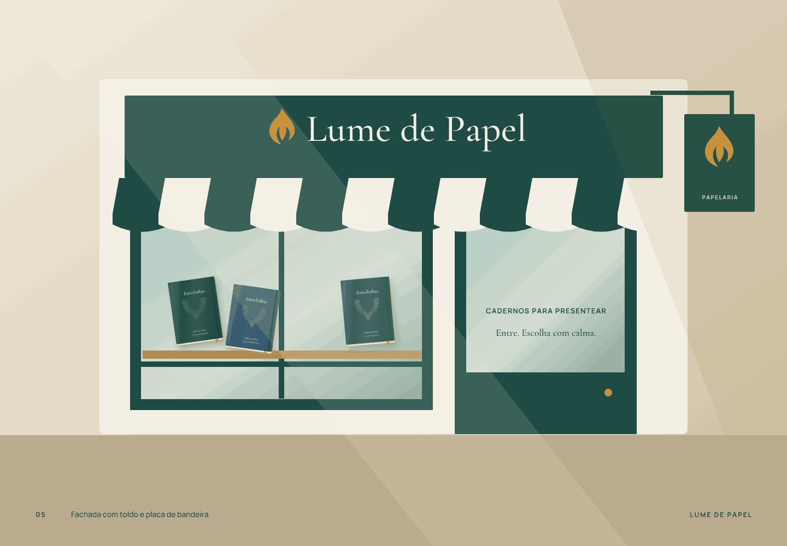
Letras em Papel sobre Mata, com chama Âmbar. Toldo sem texto miúdo. A placa de bandeira usa o símbolo para leitura lateral. Projeto cenográfico sem endereço real; estrutura, iluminação e normas locais dependem do imóvel.

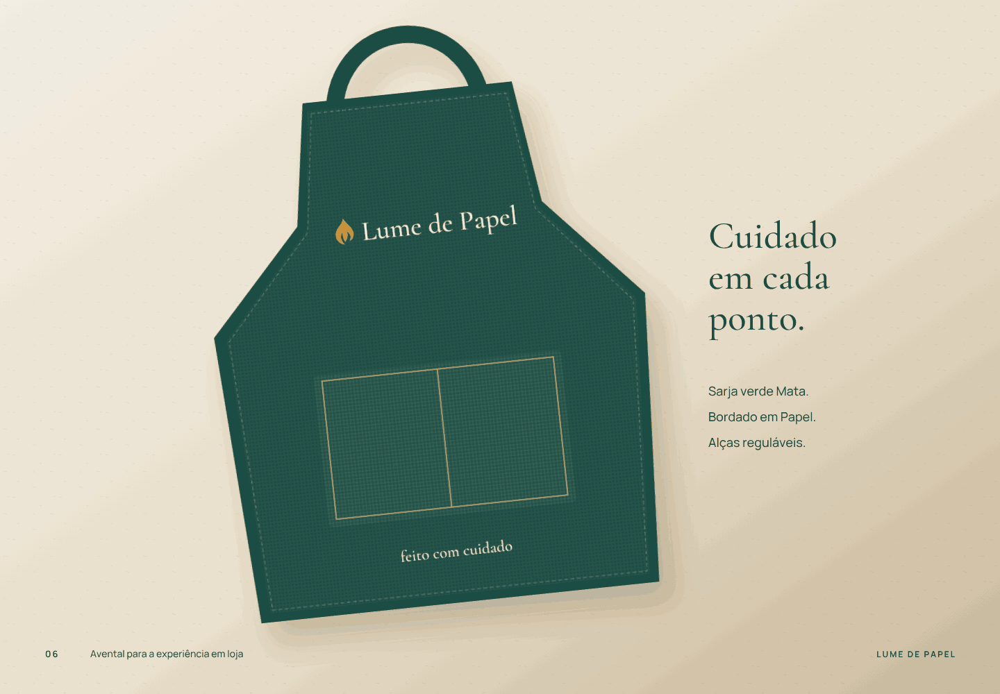
Bordado sugerido com assinatura horizontal a 14 cm de largura. A trama do tecido e a espessura da linha pedem amostra física antes da produção. O uniforme ajuda a equipe a ser encontrada sem parecer fantasia.
06 / Presença digital
A mesma Lume,
em cada conversa.
O produto abre a conversa. A linguagem aproxima. O atendimento mantém a promessa, inclusive quando precisa consultar a equipe.

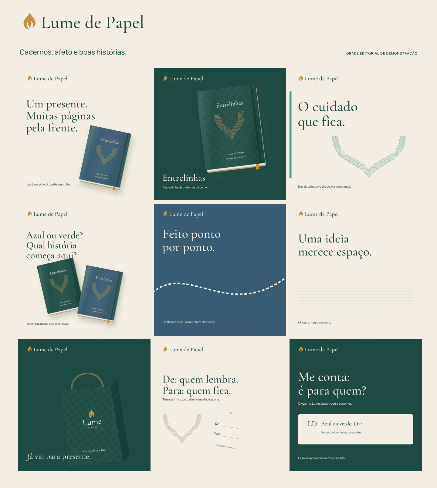
Pilares editoriais
Produto para escolher. Bastidores para perceber o acabamento. Presentes para reconhecer uma ocasião. Atendimento para facilitar o próximo passo.
Uso da grade
Cada post funciona sozinho, sem depender de mosaico. Não há frase cortada entre publicações. Os nove arquivos individuais estão na pasta de aplicações, em 1080 × 1080 px.


No celular, deslize para ver os três stories. Toque nas imagens para abrir em tamanho maior. Stories em 1080 × 1920 px. Conteúdo essencial entre 160 e 1760 px de altura. Textos curtos e chamada única. A chamada indica a intenção visual de um futuro link.

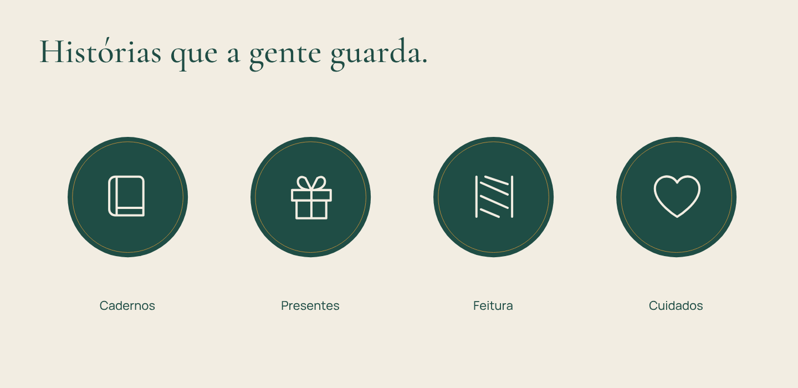
Anúncios que levam à escolha.

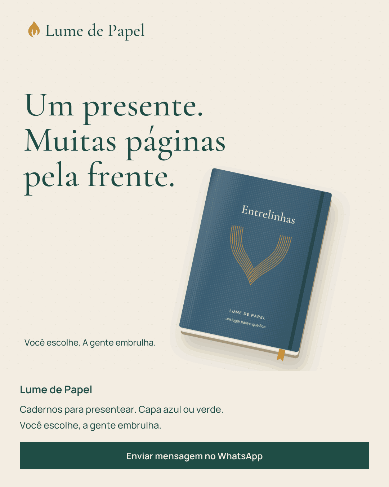

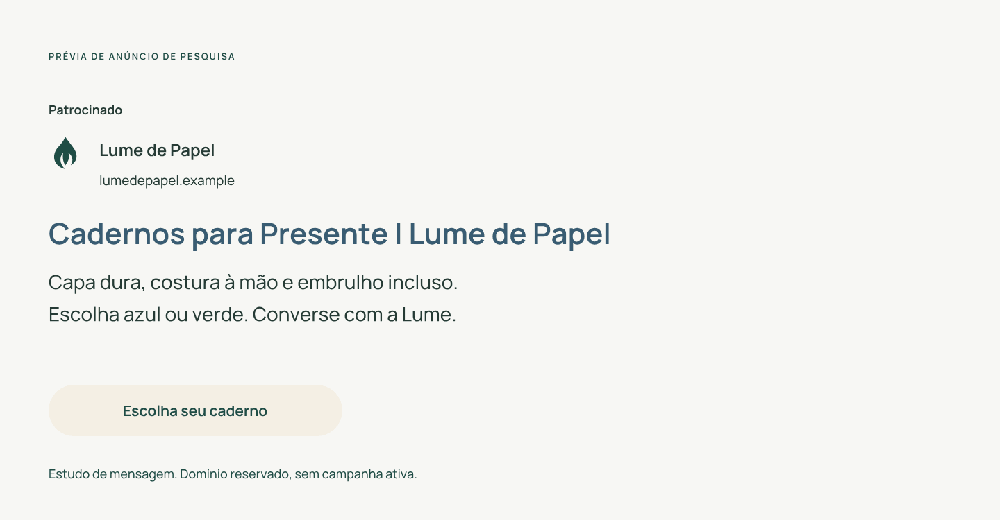
São estudos de criação, sem veiculação. A prévia de pesquisa é uma referência de mensagem; a plataforma recompõe o layout. Não há orçamento, resultado ou métrica de campanha inventados.
Uma loja que convida com calma.

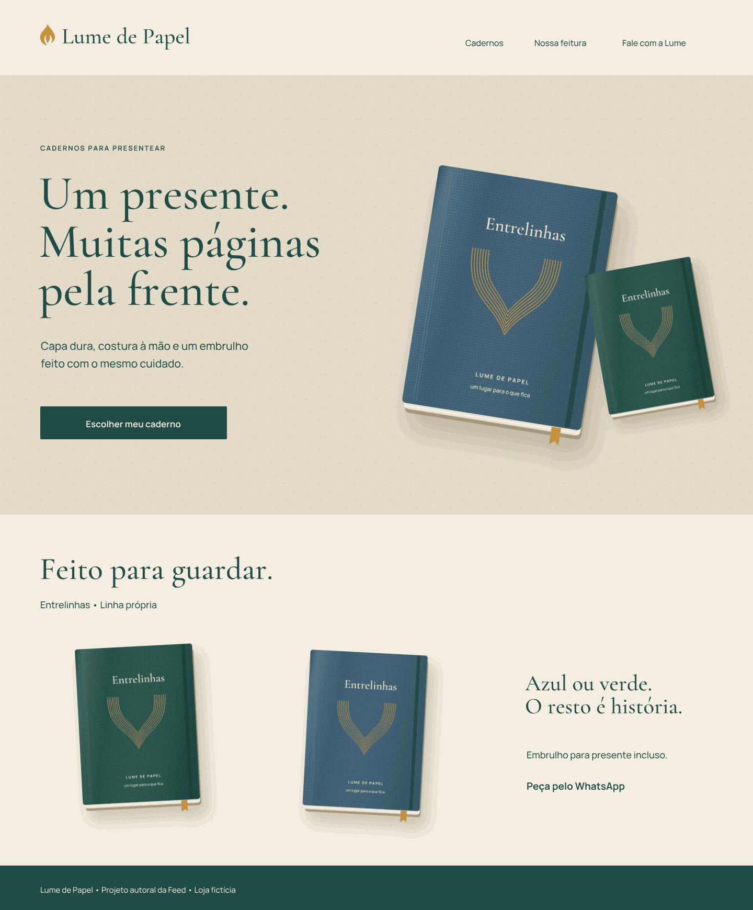

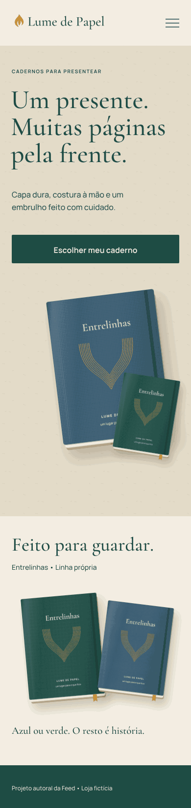
Proposta visual de página inicial, sem checkout ou loja implementada. O botão “Escolher meu caderno” representa o acesso à seleção de produto; o WhatsApp aparece na continuação da jornada.
Ser encontrado. Ser bem atendido.

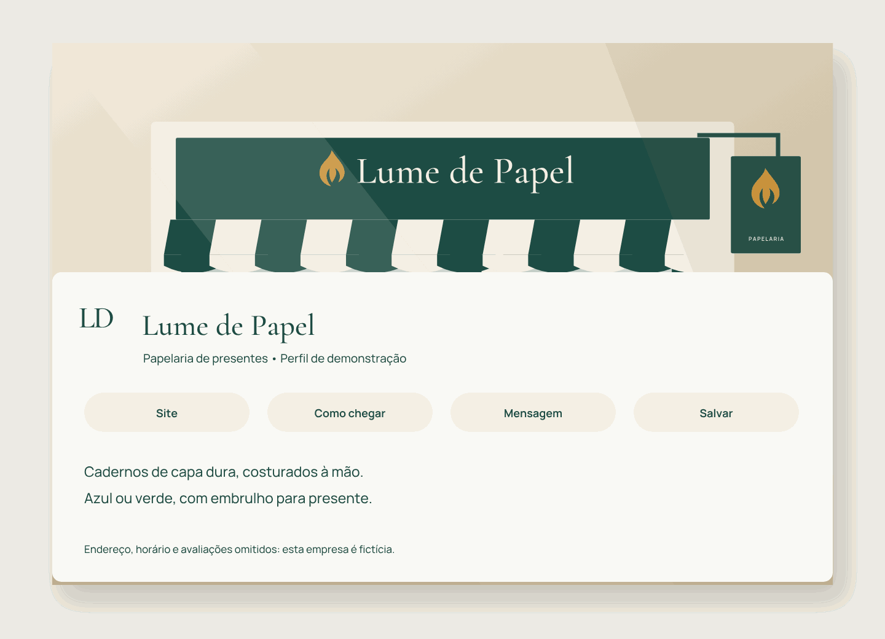

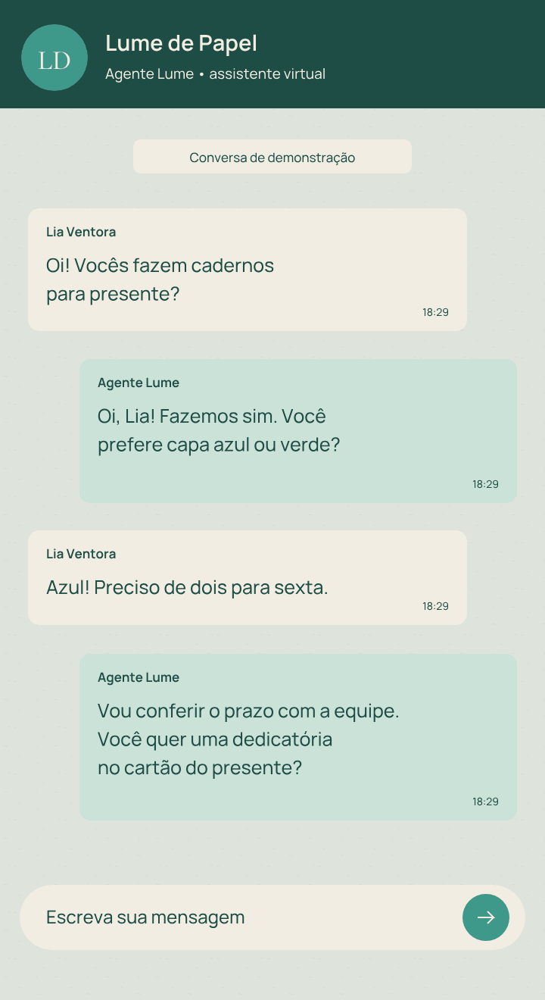
A tela de WhatsApp é a visão da cliente sobre a mesma situação já demonstrada no Hub. Não redesenha o app. Preserva LD, verde, Agente Lume, Lia, cadernos para presente e o pedido para sexta. A resposta confirma informações com a equipe antes de prometer entrega.
07 / Entrega e continuidade
Pronta para entrar
no portfólio.
Cinco peças para substituir o esboço do site da Feed, sem alterar os arquivos em que os outros agentes estão trabalhando.


Coerência com o que já existe
Verde Lume #3F998B, Mata #1F4D45, Âmbar #C8923C e Papel #F4EFE4 permanecem. A chama evolui para uma forma de folhas abertas. LD fica no avatar. O azul continua nos cadernos.
A fachada conserva o toldo. O atendimento conserva os nomes e a situação de presente. Os materiais do Hub não foram alterados.
O que esta entrega representa
Um sistema de marca e uma apresentação de direção visual com arquivos vetoriais e PNGs. Mockups são composições autorais ilustradas. Produção gráfica, fotografia real e implementação da loja pedem etapas próprias.
Este case não apresenta cliente, depoimento, volume de vendas ou resultado comercial. A autoria conceitual é da Feed, com desenvolvimento assistido por IA.